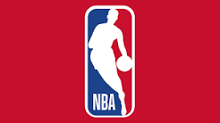

Üdv a kedvenc kosárlabdás oldaladon!
| Név | Csapat | Mezszám |
|---|---|---|
| Michael Jordan | Chicago Bulls | 23 |
| Kobe Bryant | Los Angeles Lakers | 8 |
| Stephen Curry | Golden State Warriors | 30 |

A kosárlabda az egyik legjobb sport a világon.
Sokan szeretik, mert izgalmas, pörgős, és mindig történik valami a pályán.
Egy jó meccsen sosem lehet tudni, hogy mi lesz a vége, hiszen az utolsó másodpercben is megváltozhat minden.A kosárlabdában nemcsak a pontok számítanak, hanem a csapatmunka, a kitartás és az is, hogy mennyire szereted ezt a sportot.
Minden játékosnak megvan a maga szerepe, és együtt sokkal többre képesek, mint külön-külön. Egy jó passz, egy szép dobás vagy egy fontos védekezés is eldönthet egy mérkőzést.
Szerintem az egyik legjobb dolog a kosárlabdában, hogy mindig lehet fejlődni.
Lehet gyakorolni a dobásokat, javítani a technikán, gyorsabbá válni, és egyre jobban megismerni a játékot.
Persze nem mindig sikerül minden, és vannak nehezebb pillanatok is, de pont ettől lesz igazán érdekes ez a sport.
A kosárlabda rengeteg emlékezetes pillanatot ad. Egy szoros meccs, egy utolsó másodperces kosár vagy egy hihetetlen fordítás olyan élmény lehet, amit sokáig nem felejtünk el.
És persze ott vannak a kedvenc játékosaink is, akiket öröm nézni, és akiktől sokat lehet tanulni.Ezen az oldalon a kosárlabdáról, a játékosokról, a csapatokról és a legjobb pillanatokról lesz szó.
Szeretnék olyan tartalmakat megosztani, amelyeket minden kosárlabda-rajongó szívesen olvas.
Legyen szó egy izgalmas mérkőzésről, egy nagyszerű teljesítményről vagy egyszerűen csak a kosárlabda szeretetéről, itt a helyed!
NBA Hivatalos Oldala